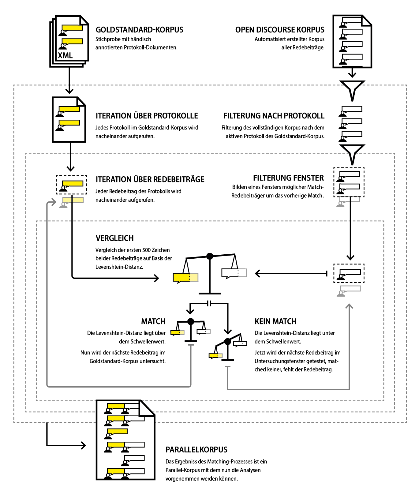

3.4 Matching der Redebeiträge
Contents
3.4 Matching der Redebeiträge#
Bis hierhin liegen zwei Korpora vor. Um das OP-Korpus mithilfe des annotierten Goldstandard-Korpus zu untersuchen, müssen beide Korpora zusammengebracht werden, die jeweilige Entsprechung im anderen Korpus also gefunden und gematched werden. Beiträge, die nicht im OP-Korpus enthalten sind, aber im Goldstandard-Korpus, fehlen – sie wurden vom OP-Code nicht erkannt. Andersherum, also Redebeiträge, die im OP-Korpus existieren, aber nicht im Goldstandard-Korpus, sind fälschlich als Redebeiträge erkannte Textfragmente. In diesem Kapitel auch die Zuordnung und der korrekte Umfang eines Redebeitrags untersucht.
Für den Vergleich wurden beide Korpora in Python bearbeitet. Das OP-Korpus wurde gefiltert, um nur die Redebeiträge der 36 Debatten aus der Stichprobe zu enthalten, die auch manuell annotiert wurden. Für das Matching wurden die Redebeiträge beider Korpora iterativ verglichen und gematched. Nach dem Match wurde auch die Richtigkeit des Redebeitrags-Umfangs bestimmt. Der Prozess gliedert sich in die folgenden vier Schritte:
Daten laden
Datenvorbereitung
Datenvergleich & -kombinierung
Überblickstabelle erstellen
Zu Beginn werden die notwendigen Pakete geladen und Prozess-Variablen für die richtige Typen-Formatierung von Zahlen und das Logging des Prozesses gesetzt:
import pandas as pd
import numpy as np
import re
import os
from lxml import etree
from fuzzywuzzy import fuzz, process
from joblib import Parallel, delayed
import logging
from IPython.display import display, HTML
logging.basicConfig(filename='data-check_open-discourse.log', encoding='utf-8', level=logging.DEBUG)
pd.options.display.float_format = "{:.2f}".format
3.4.1 Daten laden#
Die beiden Korpora haben eine abweichende Datenstruktur und müssen deshalb unterschiedlich für die Durchführung geöffnet werden. Das Open-Discourse-Korpus kann mit einem einfachen Befehl geladen werden und ist dann als Datentabelle im Programm vorhanden.
Das OP-Korpus wird importiert, für die Goldstandard-XML-Dateien wird der Pfad gesetzt und das leere Dataframe dataset_gold erstellt, wie auch das Dafaframe overview_datasets für Zusammenfassung aller Kennzahlen.
# Externe Ressourcen laden/definieren
dataset_open_discourse = pd.read_feather("../data/open_discourse/speeches.feather")
annotated_xml_path = "../data/evaluation/annotated_enriched_protocols/"
# Leeres Dataframe für das Goldstandard-Korpus
dataset_gold_columns = ["id", "period", "protocol_number", "speech_number", "date", "full_name", "last_name",
"first_name", "group", "party", "position", "position_group", "politician_id", "GND", "QID",
"length", "text", "speech_name_data"]
dataset_gold = pd.DataFrame(columns=dataset_gold_columns)
# Überblicksdataframe erstellen
overview_datasets = pd.DataFrame(columns=['id', 'period', 'protocol_number', 'date', 'gold_count'])
Die Hauptvergleichsinformationen werden in dem Dataframe data_gold hinterlegt, beispielsweise ob die jeweilige Rede richtig zugeordnet wurde oder vollständig ist. In dataset_open_discourse wird weiterhin aufgezeichnet, ob ein Redebeitrag unerkannt ist und nicht mit seiner Id als Match in data_gold auftaucht. Dies ist nur der Fall bei Einträgen, die tatsächlich keine Redebeiträge sind, sondern Fehlerkennungen; dennoch sollen natürlich auch diese erkannt werden.
Im Folgenden wird über alle Protokolle sowie alle darin enthaltenen Reden iteriert und diese werden dann in das dataset_gold-Dataframe übertragen:
# Über alle Protokolle iterieren
for file in os.listdir(annotated_xml_path):
if file.endswith('.xml'):
filename = os.path.join(annotated_xml_path, file)
# Öffne die XML-Datei
tree = etree.parse(filename)
root = tree.getroot()
sitzungsverlauf = root.find('sitzungsverlauf')
# Extrahiere die Protokoll-Meta-Daten
date = root.get("sitzung-datum")
period = int(root.get("wahlperiode"))
protocol_number = int(root.get("sitzung-nr"))
# Über die Reden innerhalb des Protokolls iterieren
speech_number = 0
for speech in sitzungsverlauf:
# Speech Id generieren
# Potentielles Verbesserung: Generierte ID in den Meta-Daten jeder Rede abspeichern
speech_number = speech_number + 1
id = int(str(period).zfill(2) + str(protocol_number).zfill(3) + str(speech_number).zfill(3))
# Redner:innen Meta-Daten
last_name = speech.get("last_name")
first_name = speech.get("first_name")
full_name = " ".join([first_name, last_name])
group = speech.get("group")
party = speech.get("party")
position = speech.get("position")
position_group = speech.get("position_group")
politician_id = speech.get("id")
GND = speech.get("GND")
QID = speech.get("QID")
# Redetext & -info
string = speech.text.strip()
speech_name_data_match = re.match(r"^.{5,150}?:", speech.text.strip(), re.DOTALL)
speech_name_data = speech_name_data_match[0] if bool(speech_name_data_match) else ""
text = string[len(speech_name_data):].strip()
length = len(text)
data_temp = pd.DataFrame([[id, period, protocol_number, speech_number, date, full_name, last_name, first_name,
group, party, position, position_group, politician_id, GND, QID, length, text, speech_name_data]],
columns=dataset_gold_columns)
dataset_gold = pd.concat([dataset_gold, data_temp], ignore_index=True)
# Überblicktabelle mit Metadaten füllen
overview_datasets = pd.concat([overview_datasets,
pd.DataFrame([[id, period, protocol_number, date, speech_number]],
columns=['id', 'period', 'protocol_number', 'date', 'gold_count'])],
ignore_index=True)
3.4.2 Datenvorbereitung#
Nachdem die Korpora geladen wurden, wurden sie für den Vergleich vorbereitet und formatiert. Die erste Anpassung besteht darin, im Vergleichskorpus und der Überblickstabelle die String-Datumsangaben in ein Datetime-Objekt umzuwandeln; in dem OP-Korpus sind diese bereits im passenden Format.
# Format both datasets date variable the same way
dataset_gold.date = pd.to_datetime(dataset_gold.date, format="%d.%m.%Y").dt.date
overview_datasets.date = pd.to_datetime(overview_datasets.date, format="%d.%m.%Y").dt.date
An diesem Punkt sind noch alle der 900.000 Redebeiträge im OP-Korpus vorhanden, dieses werden gefiltert, sodass nur die Redebeiträge aus den annotierten Protokollen übrig sind; diese Filterung geschieht auf Basis des Datums. Da die 21. Sitzung der ersten Periode am gleichen Tag wie die im Goldstandard-Korpus enthaltene 20. Sitzung stattfand, wurde diese noch dezidiert ausgefiltert.
# Redebeiträge ausfiltern, die nicht an Tagen der annotierten Protokolle gehalten wurden
dataset_open_discourse = dataset_open_discourse[dataset_open_discourse.date.isin(dataset_gold.date.unique())]
# Hartcoded Lösung für Beiträge der Sitzung 1-21, die am gleichen Tag der Sitzung 1-20 stattfand
dataset_open_discourse = dataset_open_discourse[~dataset_open_discourse.session.isin([21])]
# Redevariablen setzen
dataset_gold['op_id'] = 0
dataset_gold['in_op_dataset'] = False
dataset_gold['correct_scope'] = np.nan
dataset_gold['correct_scope'] = dataset_gold['correct_scope'].astype(bool)
dataset_gold['id_count_difference'] = None
dataset_gold['id_eval'] = ""
dataset_gold['fraction_eval'] = None
dataset_gold['postion_eval'] = ""
dataset_gold['difference_length'] = 0
dataset_open_discourse['in_gold_dataset'] = False
# Erstellung leereS Dataframes für die OP- und Goldstandard-auswertung
data_op, data_gold = pd.DataFrame(), pd.DataFrame()
# Liste aller Perioden
periods = dataset_gold.period.unique()
periods.sort()
# Aktualisiere Überblickstabelle
temp = dataset_open_discourse.groupby(['date'])['date'].count().to_frame().rename(
columns={'date': 'open_discourse_count'})
overview_datasets = overview_datasets.merge(temp, left_on="date", right_index=True)
del(overview_datasets["id"])
overview_datasets['speeches_difference'] = overview_datasets.gold_count - overview_datasets.open_discourse_count
overview_datasets['speeches_difference_rel'] = overview_datasets.speeches_difference / overview_datasets.gold_count
An dieser Stelle wird auch ein Dictionary definiert, welches die Auszeichnung der Fraktionen des Goldstandard-Korpus in die des OP-Korpus übersetzt:
fractions_op_dict = {-1: ['not found', ''], 0: ['AfD'], 1: ['BHE'], 2: ['BP'],
3: ['Grüne', 'BÜNDNIS 90/DIE GRÜNEN', 'GRÜNE'], 4: ['CDU/CSU'], 5: ['DA'],
6: ['DIE LINKE.', 'DIE LINKE'], 7: ['DP'], 8: ['DP/DBP'], 9: ['DP/FVP'], 10: ['DPB'], 11: ['DRP'],
12: ['DRP/NR'], 13: ['FDP'], 14: ['FU'], 15: ['FVP'], 16: ['Fraktionslos', 'fraktionslos'],
17: ['GB/BHE'], 18: ['Gast'], 19: ['KO'], 20: ['KPD'], 21: ['NR'], 22: ['PDS', 'PDS/Linke Liste'],
23: ['SPD'], 24: ['SSW'], 25: ['WAV'], 26: ['Z']}
3.4.3 Datenvergleich & -kombinierung#
Die beiden Korpora werden mit einem Algorithmus auf Periodenebene miteinander verglichen. Als Input wird über die Gesamtheit der beiden Korpora iteriert, die Redebeiträge aus den Protokollen wiederum gefiltert und sortiert.
 Abbildung 3: Schematische Darstellung des Matching-Algorithmus.
check_period() ist die zentrale Funktion für den Vergleich der beiden Kopora auf Periodenebene. Als Input wird die Gesamtheit der beiden Korpora und die Periodennummer zur Filterung übergeben.
Die Funktion iteriert über die, in diesem Fall zwei, Protokolle je Periode, dabei werden die Redebeiträge aus den Protokollen wiederum gefiltert und sortiert. Daneben wird die zahlenmäßig kleinste ID, die des ersten Beitrags, des OP-Korpus extrahiert: Da die ID im OP-Korpus vorlaufend ist, kann sie zur Sortierung genutzt werden, die dabei extrahierte min_id wird im nächsten Schritt benötigt.
Auf der zweiten Ebene wurde über die Redebeiträge im Goldstandard-Korpus iteriert, um diese zu vergleichen. Diese wurden nicht mit allen Redebeiträgen des entsprechenden Protokollnummers aus dem OP-Korpus verglichen, sondern mit einer Auswahl in Frage kommender Redebeiträge, einem sich verschiebenden Redebeitragsfenster. Gerade sehr kurze Redebeiträge, beispielsweise in Fragerunden nach Erteilung des Rederechts durch den Präsidenten, können sich diese bis auf das Zeichen gleichen. Deshalb sind für den Vergleich nicht nur die sprechende Person und der Text wichtig, sondern auch die Position. Das Fenster formt sich um die min_id. Nach dem initialen Setzen auf den ersten Beitrag ist es die ID des letzten Matches. Das Fenster bildete sich also um diesen Beitrag, in diesem Fall ist das Fenster sechs Redebeiträge groß, für den aktuell untersuchten Redebeitrag wurden die drei vorherigen und die drei folgenden Redebeiträge des letzten Matchs untersucht. Dieses Fenster wurde durch iteratives Ausprobieren als Optimalwert gefunden.
Eine Ausnahme bilden dabei Redebeiträge von Kanzlern, der Kanzlerin und des Bundespräsidenten: Aufgrund eines RegEx-Fehlers im OP-Code wurden Zwischenrufe von diesen fälschlich als Redebeiträge getaggt; dies betraf in der Stichprobe vor allem Helmut Kohl, der sich sehr aktiv mit Zwischenrufen an den Plenarsitzungen beteiligte. Um zu verhindern, dass Matches nicht geschehen, weil das Fenster aufgrund zu vieler Fehlerkennung von Zwischenrufen zu klein ist, wurde das Fenster bei Bedarf iterativ bis 12 vergrößert.
Für jeden Redebeitrag wurde über das Fenster iteriert und die verschiedenen Vergleiche durchgeführt. Vor dem Vergleich wurden die Strings der beiden zu vergleichenden Reden bereinigt. Ein (vor der Bereinigung) 700 Zeichen langer Zeichen-String vom Anfang der Goldstandard-Rede wurde dann jeweils mit einem entsprechenden String der OP-Rede verglichen. Darauf basiert das Match; in einem weiteren Schritt wurde auch das Ende verglichen, um zu prüfen, ob die Rede vollständig ist.
Der eigentliche Vergleich wurde mit dem einem Fuzzy-Algorithmus durchgeführt, der auf der Levenshtein-Distanz zur Messung des Unterschieds zweier Zeichenketten basiert. Diese bezeichnet die Zahl der geringsten notwendigen Änderungen von Zeichen (Einfügen, Löschen, Ersetzungen) zur Angleichung zweier Texte.[1] Liegt der ermittelte Ähnlichkeitsscore über dem Schwellenwert, ist es ein Match. Die Levenshtein-Distanz wird beispielsweise auch für die Evaluation von OCR-Qualität genutzt. Die genutzte Implementierung Fuzzywuzzy besitzt dabei die Funktion partial_ratio(), die als Vergleichsgrundlage den kürzeren der beiden Strings nutzt, dies ist insofern wichtig, als dass die beiden zugrunde liegenden Redebeiträge hinsichtlich Layoutartefakten und der Kopfzeile unterschiedlich bereinigt wurden:
fuzz.ratio("Berlin, Deutschland","Berlin")
48
fuzz.partial_ratio("Berlin, Deutschland","Berlin")
100
Der kürzere String ‘Berlin’ stimmt als Substring vollständig mit dem Vergleichsstring überein, eine andere Stadt würde den Score jedoch wieder verringern:
fuzz.partial_ratio("Düsseldorf, Deutschland","Berlin, Deutschland")
79
Durch mehrere Iterationen hat sich in diesem Fall 75 als der passende Schwellwert, ab dem ein Match akzeptiert wird, gezeigt. Für das Ende des Strings liegt der Schwellwert dagegen bei 78.
fuzzy_threshold = 75
fuzzy_threshold_end = 78
Für besonders kurze Strings wurde eine Warnung ausgegeben, falls dieser zwar gematched wurde, aber sehr kurz ist und innerhalb des Fensters etwas weiter entfernt ist; durch den kurzen String gab es ein erhöhtes Risiko für Fehlmatches – gerade bei Moderationsphrasen.
Im Fall eines positiven Matches wurde dieses in den Tabellen hinterlegt und evaluiert hinsichtlich der korrekten Redelänge/-repräsentation, dem:der Redner:in, der Fraktion/Gruppe.
Zum Abschluss wurden die Daten in Form eines Parallelkorpus zurückgegeben, das die gematchten und jeweils fehlenden Redebeiträge enthält.
def check_period(period_number, data, data_gold):
# Filtern nach Periode
protocols = data_gold[data_gold['period'] == period_number].protocol_number.unique()
# Anlegen leerer Listen für die Datenrückgabe
protocol_data_list = list()
protocol_gold_list = list()
for protocol_number in protocols:
# print('Processing: ' + str(period_number) + ' - ' + str(protocol_number))
# Goldstandard-Korpus: Filtern nach Protokoll und Sotieren
speeches_gold = data_gold[(data_gold['period'] == period_number) & (data_gold['protocol_number'] == protocol_number)]
speeches_gold = speeches_gold.sort_values(by=['speech_number'])
# OP-Korpus: Filtern nach Protokoll und Sotieren
speeches_open_discourse = data[(data['electoralTerm'] == period_number)
& (data['session'] == protocol_number)]
speeches_open_discourse = speeches_open_discourse.sort_values(by=['id'])
# Setzen der Mindesid
min_id = speeches_open_discourse.sort_values(by=['id']).head(1).id.values[0]
for idx, speech_gold in speeches_gold.iterrows():
# Analysefenster-Variablen
speech_window = 6
window_count = 0
# Iterieren über das Fenster
while window_count <= speech_window:
# OP-Vergleichsrede setzen
try_to_match_id = min_id - speech_window/2 + window_count
window_count += 1
speech_open_discourse = speeches_open_discourse.loc[(speeches_open_discourse['in_gold_dataset'] == False)
& (speeches_open_discourse['id'].astype(int) == try_to_match_id)].head(1)
# Falls keine OP-Rede mit der ID vorhanden
if len(speech_open_discourse) == 0:
continue
# Umformung der Rede zu einem Tuple
speech_open_discourse = list(speech_open_discourse.itertuples(index=False))[0]
# Bereinigung der Strings
clean_speech_start_gold, shortened_start = clean_text(speech_gold.text[:700])
clean_speech_start_gold = clean_speech_start_gold[:200].strip()
clean_speech_start_op = clean_text(speech_open_discourse.speechContent[:700], shortened = shortened_start)[0]
clean_speech_start_op = clean_speech_start_op.strip()[:len(clean_speech_start_gold)]
# Fuzzy Vergleich der Strings
comparison_score = fuzz.partial_ratio(clean_speech_start_gold, clean_speech_start_op)
# Loggen der Versuche
log_loc = "{} - {}: Test: {}, OP: {}: ".format(period_number, protocol_number,
speech_gold.speech_number, speech_open_discourse.id)
logging.info(log_loc, "Try, Score: {}".format(comparison_score))
# Loggen möglicher Fehlmatches, gerade kurze Redebeiträge sind gefärdet
if len(clean_text(speech_gold.text)[0]) < 50 and comparison_score > fuzzy_threshold and (speech_open_discourse.id > min_id + 2):
logging.warning(log_loc + "Check needed wether Match is correct!")
# Im Falle eines Matches, Loggen und Setzen der Variablen
if comparison_score > fuzzy_threshold:
min_id = set_match(speeches_gold, speech_gold, speeches_open_discourse, speech_open_discourse,
min_id, comparison_score, log_loc)
evaluate_end(speeches_gold, speech_gold, speech_open_discourse)
evaluate_speaker(speeches_gold, speech_gold, speech_open_discourse)
evaluate_group(speeches_gold, speech_gold, speech_open_discourse)
evaluate_length_difference(speeches_gold, speech_gold, speech_open_discourse)
break
# Vergrößung des Untersuchungsfenster, falls der:die Redner:in Kanzler ist
# Grundlage hierfür sind fälschlich als Reden erkannte Zwischenrufe im OP-Korpus aufgrund eines Regex-Fehlers
elif speech_open_discourse.positionShort == "Chancellor" and speech_window < 12:
speech_window += 2
logging.info("{} - {}: Increase window size\n".format(str(period_number), str(protocol_number)))
# Daten anhängen
protocol_data_list.append(speeches_open_discourse)
protocol_gold_list.append(speeches_gold)
return protocol_data_list, protocol_gold_list
Die Funktion clean_text() bereinigt die Input-Strings. Zuerst werden Zwischenrufe gefiltert, diese sind im OP-Korpus aus den Reden extrahiert und durch einen kurzen Platzhalter ersetzt. Je nachdem, ob ein String vom Beginn oder Ende des Redebeitrags als Input übergeben wird, unterscheidet sich die RegEx-Regel. Dies ist für den Fall, dass nur ein Teil des Zwischenrufs, der sich durch eine öffnende und eine schließende Klammer definiert wird, übergeben wurde.
Bei kurzen Moderations-Redebeiträgen der Präsident:innen unterscheiden sich diese teils nur durch den Namen des angesprochenen Abgeordneten. Dies kann zu Fehlmatches führen, die entsprechende Ansprache-Formel wird deshalb ausgefiltert, sodass nur der Name des:der Politiker:in übrig bleibt.
Zuletzt werden Kopfzeilen gefiltert und Wörter am Zeilenende, die getrennt wurden, wieder zusammengesetzt.
def clean_text(string, end = False, shortened = False):
# Filterung von Zwischenrufen, unterschiedliche Muster je nachdem ob Beginn oder Ende
if not end:
pattern_interjection = re.compile(r'\(.*?\)|\(.*', re.DOTALL)
else:
# pattern_interjection = re.compile(r'\((?:[^()]*?|\(.{0,3}\))*?\)', re.MULTILINE | re.DOTALL)
pattern_interjection = re.compile(r'\(.*?\)', re.MULTILINE | re.DOTALL)
cleaned_text = re.sub(pattern_interjection, '', string)
# Kurze Moderationsbeiträge werden verkürzt auf den Namen, um Missmatches zu verhindern
if len(cleaned_text) < 120 or shortened:
pattern_word = re.compile(r'Das Wort hat (Herr |Frau |der |die )?(Abgeordnete)?', re.DOTALL)
cleaned_text = re.sub(pattern_word, '', cleaned_text)
shortened = True
# Filterung von Kopfzeilen
elif 'Bundestag' in cleaned_text:
pattern_headline = re.compile(r'(\d{0,6}[^(\n\r]?Deutscher ? ?Bundestag[^(\n\r]{0,100})', re.DOTALL)
cleaned_text = re.sub(pattern_headline, '', cleaned_text)
# Zusammensetung getrennter Wörter am Zeilenende
cleaned_text = re.sub(r"-(\\n|\n)", "", cleaned_text)
cleaned_text = re.sub(r"\s*(\\n|\n)", " ", cleaned_text)
return cleaned_text, shortened
set_match() ergänzt in dem Goldstandard-Datensatz Informationen zu dem Match: die OP-ID des gematchen Rede, den Fuzzy-Score sowie die ID-count-difference. Letztere sind gute Indikatoren, um Fehlmatches oder Anomalien zu finden. Daneben wird auch in dem OP-Korpus vermerkt, dass die Rede gematched ist, um sicherzustellen, dass jede OP-Rede nur einem Goldstandard-Redebeitrag zugeordnet werden kann.
def set_match(speeches_gold, speech_gold, speeches_open_discourse, speech_open_discourse,
min_id, comparison_score, log_loc):
# Log
logging.info(log_loc, "Success, Score: {}".format(comparison_score))
# Goldstandard-Daten mit Informationen vervollständigen
speeches_gold.loc[speeches_gold['id'] == speech_gold.id, 'in_op_dataset'] = True
speeches_gold.loc[speeches_gold['id'] == speech_gold.id, 'op_id'] = speech_open_discourse.id
speeches_gold.loc[speeches_gold['id'] == speech_gold.id, 'op_fuzz'] = comparison_score
speeches_gold.loc[speeches_gold['id'] == speech_gold.id, 'id_count_difference'] = speech_open_discourse.id - min_id
# OP-Redebeitrag als gematched makieren
speeches_open_discourse.loc[speeches_open_discourse['id'] == speech_open_discourse.id, 'in_gold_dataset'] = True
# Neue min_id zurückgeben
return speech_open_discourse.id
Die Funktion evaluate_end() vergleicht analog zu dem Beginn-String in der check_period()-Funktion das Ende der beiden gematchen Redebeitragsversionen, um zu untersuchen, ob dieses vollständig im OP-Korpus vorhanden ist. Die Informationen hierzu werden in den Goldstandard-Daten gespeichert.
Da der OP-Algorithmus die Protokolle mit RegEx-Mustern wie analog einer Schere auseinanderschneidet, ist ein falsches Beitragsende ein sehr guter Indikator für einen folgenden fehlenden Beitrag: Dieser wurde schlicht nicht als Redebeitrag erkannt und ist Teil des vorherigen Beitrags.
Bei genau zwei Redebeiträgen führen Zwischenrufe, welche Klammern enthalten, zu einer fehlerhaften RegEx-Filterung. Diese Problematik ließe sich zwar mit einem komplexeren Muster lösen, führt jedoch zu einer deutlich verschlechterten Performance, deshalb werden diese manuell getaggt:
def evaluate_end(speeches_gold, speech_gold, speech_open_discourse):
correct_scope_manual = [18088049, 14150185]
# Bereinigung der beiden zu vergleichenden Strings
clean_speech_end_gold, shortened_end = clean_text(speech_gold.text[-700:], True)
clean_speech_end_gold = clean_speech_end_gold[-200:].strip()
clean_speech_end_op = clean_text(speech_open_discourse.speechContent[-700:], True, shortened_end)[0]
clean_speech_end_op = clean_speech_end_op.strip()[-len(clean_speech_end_gold):]
# Vergleich der beiden Strings
comparison_score_end = fuzz.partial_ratio(clean_speech_end_gold, clean_speech_end_op)
# Ergänzung der Prüfung in den Goldstandard-Daten
speeches_gold.loc[speeches_gold['id'] == speech_gold.id, 'op_fuzz_end'] = comparison_score_end
if comparison_score_end > fuzzy_threshold_end:
speeches_gold.loc[speeches_gold['id'] == speech_gold.id, 'correct_scope'] = True
else:
if speech_gold['id'] in correct_scope_manual:
speeches_gold.loc[speeches_gold['id'] == speech_gold.id, 'correct_scope'] = True
else:
speeches_gold.loc[speeches_gold['id'] == speech_gold.id, 'correct_scope'] = False
Mit evaluate_speaker() wird einerseits untersucht, ob die Zuordnung oder Nichtzuordnung eines Redebeitrags richtig ist und welche Art von richtiger oder falscher Zuordnung hier vorliegt.
Die Zuordnungs-Evaluation bezieht sich nur auf Politiker:innen, die in der OP-Politiker:innen-Tabelle enthalten sind. Darin fehlen Staatssekretär:innen, die kein Bundestagsmandat besitzen sowie Bundesratmitglieder. Für diese kann es in der Logik des OP-Korpus keine richtige Zuordnung geben, diese Logik wird für die Untersuchung übernommen. Entsprechende Redebeiträge werden also nur auf eine mögliche falsche Zuordnung untersucht.
Ein Sonderfall bilden diejenigen Redner:innen, die zwar in dem Moment nicht als Abgeordnete sprechen, aber zu einem Zeitpunkt Abgeordnete waren oder sind. Diese erhalten im Goldstandard-Korpus immer auch ihre Bundestags-ID. So sind im Goldstandard-Korpus drei Redebeiträge von Oskar Lafontaine, zwei in der Rolle als Ministerpräsident des Saarlands, eine als Abgeordneter enthalten. Fälschlicherweise ist nur der Letzte im OP-Korpus Lafontaine zugeordnet. Gleiches gilt für Redebeiträge von Staatssekretären, die meist auch Abgeordnete sind, aber eben in der Rolle als Vertreter:innen der Bundesregierung sprechen. Werden diese nicht zugeordnet, wird dies ebenfalls als Fehler gewertet.
Diese Zuordnung ist geboten, da zwar die Stammdaten als Datenquelle für die OP-Daten benannt wurden, daraus in der Dokumentation jedoch nicht der Schluss folgt, dass diese nur für Regierungsmitglieder und Abgeordnete gelte. Stattdessen gibt es die ID „-1“, die „missing information about a politician“ repräsentiert. Die Tabelle politician enthält also nicht funktionsbasiert Abgeordnete und Regierungsmitglieder, sondern ganz allgemein Politiker:innen. Es kann dementsprechend davon ausgegangen werden, dass Nutzer:innen, die nach Reden von Oskar Lafontaine mit der ID 11002715 suchen, alle Reden von Oskar Lafontaine erwarten, nicht nur die, die er als Abgeordneter gehalten hat.
Der Vergleich selbst basiert entsprechend auf der ID der Abgeordneten aus den Stammdaten. Dabei gibt es noch einen Fallstrick: Die 15 Regierungsmitglieder in den politician-Daten mit eigens generierte IDs, die sich potenziell mit „richtigen“ IDs überschneiden. Dieser Sonderfall muss hier jedoch nicht betrachtet werden, da in den Goldstandard-Daten keine dieser 15 Personen einen Redebeitrag beigesteuert hat.
Bei der Zuordnung gibt es verschiedene Fälle, die eintreten können, in der Reihenfolge des Auftauchens im Code:
Ergebnis |
Bedeutung für OP-Redebeitrag |
|---|---|
|
✅ Richtige Zuordnung |
|
❌ Zuordnung zur falschen Person |
|
❌ Zuordnung fehlt fälschlicherweise |
|
❌ Zuordnung falsch, richtig ist keine Zuordnung |
|
✅ Richtigerweise keine Zuordnung (trotz vorhandener QID im Goldstandard-Korpus; betrifft v.a. Staatssekretäre ohne Bundestagsmandat) |
|
❓ Prüfung notwendig |
# Sprecher:innen evaluieren
def evaluate_speaker(speeches_gold, speech_gold, speech_open_discourse):
# Wenn in beiden Korpora ein Match vorhanden ist (op != -1 and test != "")
if speech_open_discourse.politicianId != -1 and speech_gold.politician_id != "":
# Herausfinden, ob ein true_positive oder false_positive Match vorliegt
politician_id_eval = "true_positive_match_match" if str(speech_open_discourse.politicianId) == speech_gold.politician_id else "false_positive_match_match"
# Wenn in OP fälschlicherweise kein Match vorhanden ist (op = -1 und test != "")
elif speech_open_discourse.politicianId == -1 and speech_gold.politician_id != "":
politician_id_eval = "false_negative_none_match"
# Wenn fälschlicherweise ein Match vorhanden ist (op != -1 und test = "")
elif speech_open_discourse.politicianId != -1 and speech_gold.politician_id == "":
politician_id_eval = "false_positive_match_none"
# Wenn richtigerweise kein Match vorhanden ist (op = -1 und test = "")
elif speech_open_discourse.politicianId == -1 and speech_gold.politician_id == "":
politician_id_eval = "true_negative_none_none"
else:
politician_id_eval = "check_needed"
speeches_gold.loc[speeches_gold['id'] == speech_gold.id, 'id_eval'] = politician_id_eval
Die Fraktions-/Gruppenzugehörigkeit wird mit der Funktion evaluate_group() evaluiert: Hierbei wird überprüft, ob die Fraktion/Gruppe des:der Redner:in der des OP-Korpuses entspricht, mit dem Übersetzungsschritt durch das eingangs in diesem Kapitel definierte Dictionary fractions_op_dict:
def evaluate_group(speeches_gold, speech_gold, speech_open_discourse):
if speech_gold.group in fractions_op_dict.get(speech_open_discourse.factionId, []):
politician_fraction_eval = True
else:
politician_fraction_eval = False
speeches_gold.loc[speeches_gold['id'] == speech_gold.id, 'fraction_eval'] = politician_fraction_eval
Mit evaluate_length_difference() wird ein einfacher Vergleich des Zeichenzahl-Verhältnisses der Zeichenzahlen des Redebeitrags in seiner OP- und Goldstandard-Korpus-Version durchgeführt:
# Evaluate length difference
def evaluate_length_difference(speeches_gold, speech_gold, speech_open_discourse):
politician_length_eval = len(speech_open_discourse.speechContent) / speech_gold.length
speeches_gold.loc[speeches_gold['id'] == speech_gold.id, 'difference_length'] = politician_length_eval
Die eigentliche Zeile Code, die den Vergleich der beiden Korpora durchführt, ist die folgende. Der Aufruf ist hierbei parallelisiert, um den zahlreichen Iterationen schnell durchführen zu können.
data_output = Parallel(n_jobs=7)(delayed(check_period)(period, dataset_open_discourse, dataset_gold) for period in periods)
WARNING:root:12 - 37: Test: 29, OP: 479496: Check needed wether Match is correct!
WARNING:root:12 - 37: Test: 38, OP: 479508: Check needed wether Match is correct!
Die Warnmeldungen für besonders kurze gematchte Redebeiträge zeigen nach ihrer Überprüfung: Die Matches sind korrekt.
Im Folgenden werden die Ergebnisse des Vergleichs wieder zusammengeführt, die ursprünglich Datenset-Variablen werden dabei mit den bearbeiteten Daten ersetzt.
for period in data_output:
for idx, protocol in enumerate(period[0]):
data_op = pd.concat([period[0][idx], data_op], ignore_index=True)
data_gold = pd.concat([period[1][idx], data_gold], ignore_index=True)
del dataset_gold, dataset_open_discourse, periods, data_output
3.4.4 Überblickstabelle erstellen#
Über die bisherigen Prozessschritte wurde die Überblickstabelle zu diesem Punkt bereits mit der Anzahl der Redebeiträge im Goldstandard- und OP-Korpus je Protokoll sowie deren Differenz gefüllt. In diesem Schritt werden nun verschiedenen Beobachtungen von der Redebeitragsebene auf die Protokollebene gezählt und zusammengefasst. Dazu wird die bestehende Tabelle um neue Spalten ergänzt:
overview_datasets = overview_datasets.sort_values(by=['date'])
for column in ['wrong_total_rel', 'missing_rel', 'scope_rel', 'id_false_rel','wrong_total',
'in_op_dataset', 'missing_in_op_dataset', 'mistakenly_recognised_speeches', 'correct_scope', 'wrong_scope',
'id_true_positive_match_match', 'id_false_positive_match_match', 'id_false_negative_none_match',
'id_false_positive_match_none','id_true_negative_none_none']:
overview_datasets[column] = int()
Mit der Funktion set_overview_vars() werden die verschiedenen Beobachtungen als absolute Zahlen gesammelt.
def set_overview_vars(overview, count, filtered_data_gold, filtered_data_op):
overview.at[count, 'in_op_dataset'] = len(filtered_data_gold[filtered_data_gold['in_op_dataset']])
overview.at[count, 'not_in_op_dataset'] = len(filtered_data_gold[~filtered_data_gold['in_op_dataset']])
overview.at[count, 'mistakenly_recognised_speeches'] = len(filtered_data_op[~filtered_data_op['in_gold_dataset']])
overview.at[count, 'correct_scope'] = len(filtered_data_gold[filtered_data_gold['correct_scope'] & filtered_data_gold['in_op_dataset']])
overview.at[count, 'wrong_scope'] = len(filtered_data_gold[(filtered_data_gold['correct_scope'] == False) & filtered_data_gold['in_op_dataset']])
for result in ['true_positive_match_match', 'false_positive_match_match', 'false_negative_none_match',
'false_positive_match_none', 'true_negative_none_none']:
overview.at[count, "id_" + result] = len(filtered_data_gold[filtered_data_gold['id_eval'] == result])
# Anzahl aller fehlerhaften Redebeiträge je Periode
# Nicht Summe aller Fehler, sondern Anzahl aller Redebeiträge die mindestens einen Fehler haben
overview.at[count, 'wrong_total'] = \
len(filtered_data_gold[(filtered_data_gold['id_eval'] == 'false_negative_none_match') |
(filtered_data_gold['id_eval'] == 'false_positive_match_none') |
(filtered_data_gold['id_eval'] == 'false_positive_match_match') |
(~filtered_data_gold['correct_scope']) |
(~filtered_data_gold['in_op_dataset'])]) + \
len(filtered_data_op[~filtered_data_op['in_gold_dataset']])
Diese Funktion wird für jedes Protokoll aufgerufen:
for i, protocol in overview_datasets.iterrows():
overview_datasets.at[i, 'description'] = str(protocol.period).zfill(2) + str(protocol.protocol_number).zfill(3)
set_overview_vars(overview_datasets, i, data_gold[data_gold.date == protocol.date], data_op[data_op.date == protocol.date])
Zudem wird eine Kopie der Tabelle mit einer Zusatzzeile erstellt, die die Beobachtungen auf Korpusebene zusammenfasst:
overview_dataset_total = overview_datasets.copy(deep=True)
overview_dataset_total = pd.concat([overview_dataset_total,
pd.DataFrame({'description':['total'], 'gold_count':[len(data_gold)],
'open_discourse_count':[len(data_op)]})],
ignore_index=True)
set_overview_vars(overview_dataset_total, len(overview_dataset_total) - 1, data_gold, data_op)
Als letzter Schritt werden auf Basis der absoluten Zahlen noch die relativen Werte berechnet und die Reihenfolge umgestellt:
def transform_overview_table(overview):
# Relative Anteile berechnen
overview['id_false_rel'] = (overview['id_false_negative_none_match'] +
overview['id_false_positive_match_match'] +
overview['id_false_positive_match_none']) / overview['in_op_dataset']
overview['missing_rel'] = overview['not_in_op_dataset'] / overview['gold_count']
overview['mistaken_rel'] = overview['mistakenly_recognised_speeches'] / overview['gold_count']
overview['scope_rel'] = overview['wrong_scope'] / overview['gold_count']
overview['wrong_total_rel'] = overview['wrong_total'] / overview['gold_count']
# Spalten neu ordnen
overview = overview[['description', 'period', 'protocol_number', 'date', 'gold_count', 'open_discourse_count', 'wrong_total_rel',
'missing_rel', 'mistaken_rel', 'scope_rel', 'id_false_rel', 'wrong_total','in_op_dataset', 'not_in_op_dataset',
'mistakenly_recognised_speeches', 'correct_scope', 'wrong_scope', 'speeches_difference', 'speeches_difference_rel',
'id_true_positive_match_match', 'id_false_positive_match_match', 'id_false_negative_none_match',
'id_false_positive_match_none', 'id_true_negative_none_none']]
return overview
overview_datasets = transform_overview_table(overview_datasets)
overview_dataset_total = transform_overview_table(overview_dataset_total)
Damit gibt es in der Tabelle overview_datasets die folgenden Spalten:
Spalte |
Erklärung |
|---|---|
|
Kurzbeschreibung |
|
Periode |
|
Protokollnummer |
|
Datum des Protokolls |
|
Anzahl von Redebeiträgen im Goldstandard-Korpus |
|
Anzahl von Redebeiträgen im OP-Korpus |
|
❌ Rel. Anteil von Redebeiträgen mit mindestens einem Fehler |
|
❌ Rel. Anteil von im OP-Korpus fehlenden Redebeiträgen |
|
❌ Rel. Anteil von fälschlicherweise erkannten Redebeiträgen (meist Zwischenrufe) |
|
❌ Rel. Anteil von Redebeiträgen, deren Text teils falsch ist (unvollständig oder teils falsch zugeordneter Text), nur auf Basis in OP vorhandener Beiträge |
|
❌ Rel. Anteil von falsch oder nicht zugeordneter Redebeiträge |
|
❌ Zahl von Redebeiträgen mit mindestens einem Fehler |
|
✅ Zahl von Redebeiträgen aus dem OP-Korpus, die auch im Goldstandard-Korpus sind |
|
❌ Zahl von Redebeiträgen, die im OP-Korpus fehlen |
|
❌ Zahl von Redebeiträgen im OP-Korpus, die keine eigenen Redebeiträge sind (meist Zwischenrufe) |
|
✅ Zahl von Redebeiträgen, deren Text vollständig und richtig ist |
|
❌ Zahl von Redebeiträgen, deren Text teils falsch ist (unvollständig oder teils falsch zugeordneter Text), nur auf Basis in OP vorhandener Beiträge |
|
❌ Differenz aus Redebeitragsbetrag-Anzahl beider Korpora; ggf. irreführend z.B. durch fehlende in Kombination mit fälschlich erkannten Redebeiträgen |
|
❌ Relative Abweichung der Redebeitragsbetrag-Anzahl beider Korpora; ggf. irreführend |
|
✅ Anzahl von Redebeiträgen, deren Redner:innen-Zuordnung richtig ist |
|
❌ Anzahl von Redebeiträgen, deren Redner:innen-Zuordnung die falsche Person matched |
|
❌ Anzahl von Redebeiträgen, deren Redner:innen-Zuordnung bei denen fälschlicherweise die Zuordnung fehlt |
|
❌ Anzahl von Redebeiträgen, deren Redner:innen-Zuordnung die fälschlicherweise eine Zuordnung haben (richtig wäre keine Zuordnung) |
|
✅ Anzahl von Redebeiträgen, die richtigerweise keine Zuordnung Redner:innen-Zuordnung haben |
|
Alle relativen Zahlen sind dabei auf Basis der absoluten Zahl der Redebeiträge je Protokoll im Goldstandard-Korpus gerechnet. Der Anteil fälschlich erkannter Redebeiträge ist eine Annäherung, da er auf das OP-Korpus gerechnet werden müsste.
display(HTML(overview_dataset_total.to_html()))
| description | period | protocol_number | date | gold_count | open_discourse_count | wrong_total_rel | missing_rel | mistaken_rel | scope_rel | id_false_rel | wrong_total | in_op_dataset | not_in_op_dataset | mistakenly_recognised_speeches | correct_scope | wrong_scope | speeches_difference | speeches_difference_rel | id_true_positive_match_match | id_false_positive_match_match | id_false_negative_none_match | id_false_positive_match_none | id_true_negative_none_none | |
|---|---|---|---|---|---|---|---|---|---|---|---|---|---|---|---|---|---|---|---|---|---|---|---|---|
| 0 | 01020 | 1 | 20 | 1949-12-02 | 74 | 93 | 0.32 | 0.01 | 0.27 | 0.01 | 0.03 | 24.00 | 73.00 | 1.00 | 20.00 | 72.00 | 1.00 | -19 | -0.26 | 71.00 | 0.00 | 2.00 | 0.00 | 0.00 |
| 1 | 01229 | 1 | 229 | 1952-09-11 | 131 | 123 | 0.14 | 0.06 | 0.00 | 0.06 | 0.02 | 18.00 | 123.00 | 8.00 | 0.00 | 115.00 | 8.00 | 8 | 0.06 | 121.00 | 0.00 | 2.00 | 0.00 | 0.00 |
| 2 | 02087 | 2 | 87 | 1955-06-15 | 201 | 189 | 0.12 | 0.06 | 0.00 | 0.06 | 0.00 | 24.00 | 189.00 | 12.00 | 0.00 | 177.00 | 12.00 | 12 | 0.06 | 187.00 | 0.00 | 0.00 | 0.00 | 2.00 |
| 3 | 02202 | 2 | 202 | 1957-04-05 | 12 | 10 | 0.33 | 0.17 | 0.00 | 0.17 | 0.00 | 4.00 | 10.00 | 2.00 | 0.00 | 8.00 | 2.00 | 2 | 0.17 | 10.00 | 0.00 | 0.00 | 0.00 | 0.00 |
| 4 | 03018 | 3 | 18 | 1958-03-20 | 115 | 114 | 0.09 | 0.03 | 0.02 | 0.04 | 0.00 | 10.00 | 112.00 | 3.00 | 2.00 | 107.00 | 5.00 | 1 | 0.01 | 112.00 | 0.00 | 0.00 | 0.00 | 0.00 |
| 5 | 03103 | 3 | 103 | 1960-02-18 | 68 | 67 | 0.01 | 0.01 | 0.00 | 0.00 | 0.00 | 1.00 | 67.00 | 1.00 | 0.00 | 67.00 | 0.00 | 1 | 0.01 | 67.00 | 0.00 | 0.00 | 0.00 | 0.00 |
| 6 | 04015 | 4 | 15 | 1962-02-16 | 91 | 90 | 0.02 | 0.01 | 0.00 | 0.01 | 0.00 | 2.00 | 90.00 | 1.00 | 0.00 | 89.00 | 1.00 | 1 | 0.01 | 75.00 | 0.00 | 0.00 | 0.00 | 15.00 |
| 7 | 04184 | 4 | 184 | 1965-05-19 | 339 | 329 | 0.08 | 0.03 | 0.00 | 0.03 | 0.02 | 28.00 | 329.00 | 10.00 | 0.00 | 319.00 | 10.00 | 10 | 0.03 | 259.00 | 0.00 | 8.00 | 0.00 | 62.00 |
| 8 | 05101 | 5 | 101 | 1967-04-12 | 356 | 342 | 0.11 | 0.04 | 0.00 | 0.04 | 0.03 | 38.00 | 342.00 | 14.00 | 0.00 | 328.00 | 14.00 | 14 | 0.04 | 332.00 | 0.00 | 10.00 | 0.00 | 0.00 |
| 9 | 05158 | 5 | 158 | 1968-03-11 | 181 | 152 | 0.32 | 0.16 | 0.00 | 0.16 | 0.00 | 58.00 | 152.00 | 29.00 | 0.00 | 123.00 | 29.00 | 29 | 0.16 | 149.00 | 0.00 | 0.00 | 0.00 | 3.00 |
| 10 | 06017 | 6 | 17 | 1969-12-04 | 178 | 158 | 0.24 | 0.11 | 0.00 | 0.11 | 0.01 | 42.00 | 158.00 | 20.00 | 0.00 | 138.00 | 20.00 | 20 | 0.11 | 156.00 | 0.00 | 2.00 | 0.00 | 0.00 |
| 11 | 06185 | 6 | 185 | 1972-05-04 | 166 | 122 | 0.52 | 0.27 | 0.00 | 0.26 | 0.00 | 87.00 | 122.00 | 44.00 | 0.00 | 79.00 | 43.00 | 44 | 0.27 | 120.00 | 0.00 | 0.00 | 0.00 | 2.00 |
| 12 | 07118 | 7 | 118 | 1974-09-25 | 234 | 233 | 0.01 | 0.00 | 0.00 | 0.00 | 0.00 | 2.00 | 233.00 | 1.00 | 0.00 | 232.00 | 1.00 | 1 | 0.00 | 233.00 | 0.00 | 0.00 | 0.00 | 0.00 |
| 13 | 07140 | 7 | 140 | 1975-01-15 | 238 | 232 | 0.05 | 0.03 | 0.00 | 0.03 | 0.00 | 12.00 | 232.00 | 6.00 | 0.00 | 226.00 | 6.00 | 6 | 0.03 | 232.00 | 0.00 | 0.00 | 0.00 | 0.00 |
| 14 | 08025 | 8 | 25 | 1977-05-05 | 387 | 380 | 0.06 | 0.02 | 0.01 | 0.03 | 0.00 | 23.00 | 378.00 | 9.00 | 2.00 | 367.00 | 11.00 | 7 | 0.02 | 368.00 | 0.00 | 1.00 | 0.00 | 9.00 |
| 15 | 08080 | 8 | 80 | 1978-03-15 | 247 | 223 | 0.22 | 0.10 | 0.00 | 0.10 | 0.03 | 54.00 | 223.00 | 24.00 | 0.00 | 199.00 | 24.00 | 24 | 0.10 | 217.00 | 0.00 | 6.00 | 0.00 | 0.00 |
| 16 | 09014 | 9 | 14 | 1981-01-22 | 316 | 305 | 0.25 | 0.03 | 0.00 | 0.03 | 0.20 | 80.00 | 305.00 | 11.00 | 0.00 | 296.00 | 9.00 | 11 | 0.03 | 241.00 | 0.00 | 60.00 | 0.00 | 4.00 |
| 17 | 09126 | 9 | 126 | 1982-11-10 | 219 | 221 | 0.05 | 0.01 | 0.02 | 0.01 | 0.01 | 12.00 | 217.00 | 2.00 | 4.00 | 214.00 | 3.00 | -2 | -0.01 | 214.00 | 0.00 | 3.00 | 0.00 | 0.00 |
| 18 | 10061 | 10 | 61 | 1984-03-29 | 405 | 402 | 0.17 | 0.01 | 0.00 | 0.01 | 0.15 | 68.00 | 402.00 | 3.00 | 0.00 | 399.00 | 3.00 | 3 | 0.01 | 333.00 | 0.00 | 62.00 | 0.00 | 7.00 |
| 19 | 10213 | 10 | 213 | 1986-04-24 | 324 | 321 | 0.03 | 0.01 | 0.00 | 0.02 | 0.00 | 11.00 | 320.00 | 4.00 | 1.00 | 315.00 | 5.00 | 3 | 0.01 | 319.00 | 1.00 | 0.00 | 0.00 | 0.00 |
| 20 | 11102 | 11 | 102 | 1988-10-26 | 316 | 316 | 0.03 | 0.01 | 0.01 | 0.01 | 0.01 | 9.00 | 314.00 | 2.00 | 2.00 | 312.00 | 2.00 | 0 | 0.00 | 311.00 | 0.00 | 3.00 | 0.00 | 0.00 |
| 21 | 11124 | 11 | 124 | 1989-02-15 | 392 | 392 | 0.10 | 0.00 | 0.00 | 0.00 | 0.10 | 41.00 | 392.00 | 0.00 | 0.00 | 392.00 | 0.00 | 0 | 0.00 | 351.00 | 0.00 | 41.00 | 0.00 | 0.00 |
| 22 | 12037 | 12 | 37 | 1991-09-04 | 115 | 127 | 0.18 | 0.01 | 0.11 | 0.06 | 0.00 | 21.00 | 114.00 | 1.00 | 13.00 | 107.00 | 7.00 | -12 | -0.10 | 114.00 | 0.00 | 0.00 | 0.00 | 0.00 |
| 23 | 12152 | 12 | 152 | 1993-04-22 | 305 | 302 | 0.07 | 0.01 | 0.00 | 0.01 | 0.05 | 22.00 | 302.00 | 3.00 | 0.00 | 299.00 | 3.00 | 3 | 0.01 | 286.00 | 0.00 | 16.00 | 0.00 | 0.00 |
| 24 | 13176 | 13 | 176 | 1997-05-16 | 37 | 36 | 0.05 | 0.03 | 0.00 | 0.03 | 0.00 | 2.00 | 36.00 | 1.00 | 0.00 | 35.00 | 1.00 | 1 | 0.03 | 36.00 | 0.00 | 0.00 | 0.00 | 0.00 |
| 25 | 13217 | 13 | 217 | 1998-02-06 | 111 | 109 | 0.04 | 0.02 | 0.00 | 0.02 | 0.00 | 4.00 | 109.00 | 2.00 | 0.00 | 107.00 | 2.00 | 2 | 0.02 | 109.00 | 0.00 | 0.00 | 0.00 | 0.00 |
| 26 | 14145 | 14 | 145 | 2001-01-24 | 339 | 324 | 0.16 | 0.04 | 0.00 | 0.04 | 0.08 | 54.00 | 324.00 | 15.00 | 0.00 | 311.00 | 13.00 | 15 | 0.04 | 298.00 | 0.00 | 26.00 | 0.00 | 0.00 |
| 27 | 14150 | 14 | 150 | 2001-02-09 | 188 | 184 | 0.03 | 0.02 | 0.00 | 0.01 | 0.00 | 6.00 | 184.00 | 4.00 | 0.00 | 182.00 | 2.00 | 4 | 0.02 | 184.00 | 0.00 | 0.00 | 0.00 | 0.00 |
| 28 | 15058 | 15 | 58 | 2003-09-09 | 170 | 169 | 0.02 | 0.01 | 0.00 | 0.01 | 0.01 | 3.00 | 169.00 | 1.00 | 0.00 | 168.00 | 1.00 | 1 | 0.01 | 168.00 | 0.00 | 1.00 | 0.00 | 0.00 |
| 29 | 15077 | 15 | 77 | 2003-11-25 | 82 | 82 | 0.00 | 0.00 | 0.00 | 0.00 | 0.00 | 0.00 | 82.00 | 0.00 | 0.00 | 82.00 | 0.00 | 0 | 0.00 | 82.00 | 0.00 | 0.00 | 0.00 | 0.00 |
| 30 | 16002 | 16 | 2 | 2005-11-08 | 25 | 25 | 0.00 | 0.00 | 0.00 | 0.00 | 0.00 | 0.00 | 25.00 | 0.00 | 0.00 | 25.00 | 0.00 | 0 | 0.00 | 25.00 | 0.00 | 0.00 | 0.00 | 0.00 |
| 31 | 16133 | 16 | 133 | 2007-12-13 | 266 | 267 | 0.03 | 0.00 | 0.01 | 0.01 | 0.02 | 9.00 | 265.00 | 1.00 | 2.00 | 263.00 | 2.00 | -1 | -0.00 | 261.00 | 0.00 | 4.00 | 0.00 | 0.00 |
| 32 | 17036 | 17 | 36 | 2010-04-21 | 276 | 276 | 0.00 | 0.00 | 0.00 | 0.00 | 0.00 | 0.00 | 276.00 | 0.00 | 0.00 | 276.00 | 0.00 | 0 | 0.00 | 276.00 | 0.00 | 0.00 | 0.00 | 0.00 |
| 33 | 17248 | 17 | 248 | 2013-06-25 | 41 | 38 | 0.15 | 0.07 | 0.00 | 0.07 | 0.00 | 6.00 | 38.00 | 3.00 | 0.00 | 35.00 | 3.00 | 3 | 0.07 | 38.00 | 0.00 | 0.00 | 0.00 | 0.00 |
| 34 | 18014 | 18 | 14 | 2014-02-13 | 277 | 277 | 0.00 | 0.00 | 0.00 | 0.00 | 0.00 | 0.00 | 277.00 | 0.00 | 0.00 | 277.00 | 0.00 | 0 | 0.00 | 277.00 | 0.00 | 0.00 | 0.00 | 0.00 |
| 35 | 18088 | 18 | 88 | 2015-02-26 | 324 | 327 | 0.02 | 0.00 | 0.01 | 0.01 | 0.00 | 6.00 | 324.00 | 0.00 | 3.00 | 321.00 | 3.00 | -3 | -0.01 | 324.00 | 0.00 | 0.00 | 0.00 | 0.00 |
| 36 | total | NaN | NaN | NaN | 7546 | 7357 | 0.10 | 0.03 | 0.01 | 0.03 | 0.03 | 781.00 | 7308.00 | 238.00 | 49.00 | 7062.00 | 246.00 | NaN | NaN | 6956.00 | 1.00 | 247.00 | 0.00 | 104.00 |
Ein erster Blick in die Zusammenfassungszeile in der Tabelle overview_datasets ergibt an dieser Stelle eine Annäherung an die Gesamtfehlerquote. 10 % der Redebeiträge in den untersuchten Protokollen weisen einen Fehler hinsichtlich ihrer Repräsentation im OP-Korpus auf. Sie zeigt zudem eine starke Varianz zwischen den Fehlerquoten der einzelnen Protokolle mit einer Bandbreite von 0 % bis 52 % fehlerhafter Redebeiträge. Diese werden im nächsten Kapitel ausführlich analysiert.
# Variablen für das nächste Kapitel speichern
%store overview_datasets data_gold data_op
Stored 'overview_datasets' (DataFrame)
Stored 'data_gold' (DataFrame)
Stored 'data_op' (DataFrame)
[1] Diese wird beispielsweise auch in der Software Transkribus für die Berechnung der Zeichenfehlerrate (Character Error Rate – CER), dazu wird die Levenshtein-Distanz durch die Anzahl der Zeichen auf der Seite geteilt: CER = (i + s + d) / n
Zeichenfehlerrate (CER), READ-COOP, o. D., https://readcoop.eu/de/glossary/character-error-rate-cer/ (abgerufen: 27.04.2023).